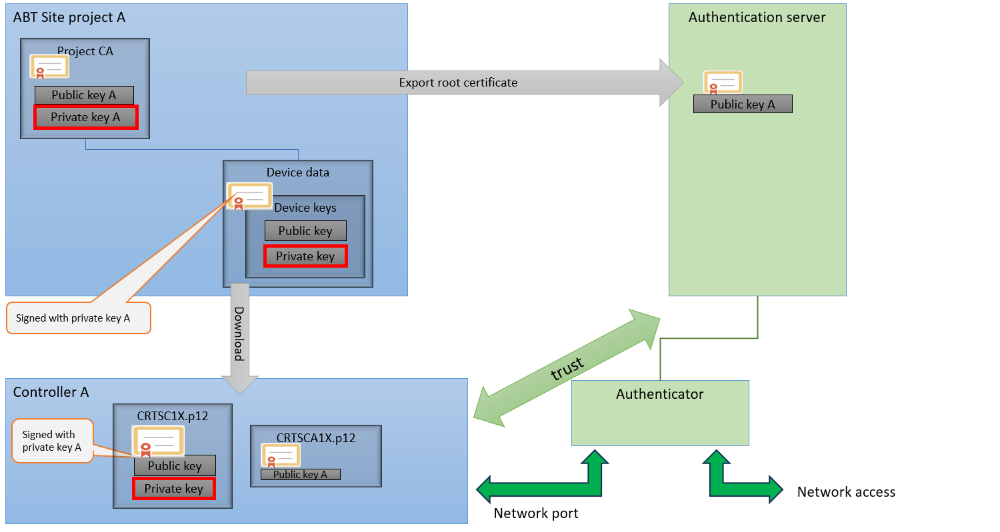
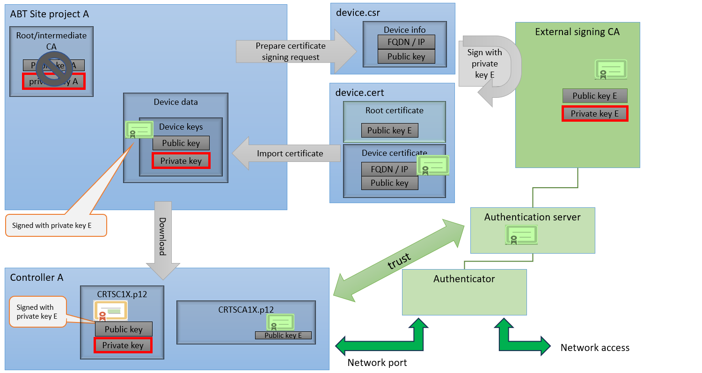
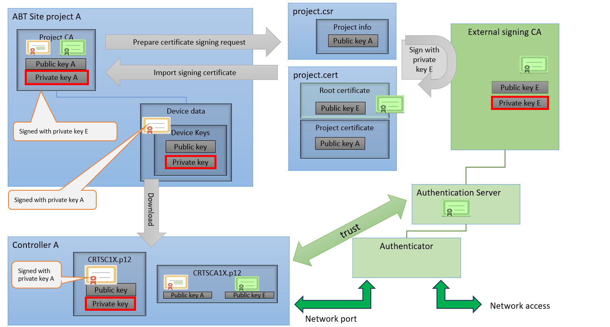

使用 IEEE 802.1X 证书
有6种场景需要更新操作证书。对于下列任何情况，请按照更新操作证书的程序进行操作。
- Operational certificate is expired.
- Root certificate is expired or must be renewed by a IT request.
- Routine periodic renewal of the operational certificate.
- Changes in the PKI settings of a project.
- Device name, ID or IP address has changed.
- Operational certificate has been compromised.

IEEE 仅从设备版本 V1.6 开始支持 802.1X 证书（在“详细信息”窗格中检查设备版本> System文件夹> Device version).
IEEE 802.1X 证书必须根据客户要求以不同的方式应用。在可信度或认证证书所涉及的工作量方面，每种方案都有其优点/disadvantages。
| 值得信赖 | 认证工作 | 努力更新运营证书 | 努力更换损坏的设备 |
|---|---|---|---|---|
IEEE 802.1X 证书，以 ABT 站点作为根 CA（内部证书） | 较少的(1) | 低的 | 低的 | 低的 |
IEEE 带有外部 CA 的 802.1X 证书 | 好的 | 高的 | 高的(2) | 高的(2) |
IEEE 802.1X 证书，外部 CA 和 ABT 站点作为中间 CA | 中等的 | 低的 | 低的 | 低的 |
(1)较少并不意味着与此类认证的连接不安全。有些客户拥有自己的认证机构，因此不信任此 ABT 网站作为认证机构。
(2)客户的 IT 部门必须参与并可以签署证书。
IEEE 802.1X certificates with ABT Site as root CA (internal certificates)
ABT 站点为每个设备创建单独的设备证书，由内部 ABT 站点项目根证书签名。项目根证书必须导出到客户的IT部门，并被认证服务器视为可信。

| 西门子任务 | 客户任务 |
|---|---|---|
1 |
| |
2 |
| |
3 | Defining the IEEE 802.1X project properties for the root certificate |
|
4 | Setting the certificate authoritytoInternal. |
|
5 |
| |
6 | 将根证书发送给客户。 |
|
7 |
| 将 ABT 站点根证书导入到其身份验证服务器环境。 |
8 |
| 通知西门子准备好身份验证服务器。 |
9 | Downloading the control program并完整下载到每台设备。 |
|
10 | 与客户的 IT 部门一起测试 IEEE 802.1X 证书管理。 | |
IEEE 802.1X certificates with external CA
ABT 站点为每个设备创建单独的设备证书签名请求。它必须由某个外部 CA 签名，并被身份验证服务器视为可信。签名的证书将导入回 ABT 站点，然后加载到每个设备。
该解决方案的工程工作量较高，但客户的 IT 部门可能认为更值得信赖。

| 西门子任务 | 客户任务 |
|---|---|---|
1 |
| |
2 |
| |
3 | Defining the IEEE 802.1X project properties for the root certificate |
|
4 | Setting the certificate authoritytoExternal. |
|
5 | Exporting an IEEE 802.1X operational certificate signing request对于每个设备。 |
|
6 |
| 由外部签名认证机构签署每个操作证书。 |
7 |
| 将签署的操作证书发送回西门子。 |
8 | Importing an IEEE 802.1X operational certificate from an external CA对于每个设备。 |
|
9 | Downloading the control program并完整下载到每台设备。 |
|
10 | 与客户的 IT 部门一起测试 IEEE 802.1X 证书管理。 | |
IEEE 802.1X certificates with external CA and ABT Site as Intermediate CA
ABT 站点导出其项目根签名密钥的证书签名请求。它必须由外部 CA 签名并被身份验证服务器视为可信。签名的证书将导入回 ABT 站点。 ABT 站点为每个设备创建单独的设备证书，并使用其项目密钥进行签名。该项目签名证书现在不再是受信任的根，而是更长信任链的一部分。
您可以根据需要从 ABT 站点作为 CA 过渡到具有外部 CA 的中间解决方案。然后，ABT 站点根证书信任外部签名证书以完成信任链。在这种情况下不需要重新加载设备。

| 西门子任务 | 客户任务 |
|---|---|---|
1 |
| |
2 |
| |
3 | Defining the IEEE 802.1X project properties for the root certificate |
|
4 | Setting the certificate authoritytoInternal. |
|
5 | Exporting the certificate signing request for the intermitted root certificate. |
|
6 |
| Signing the intermitted root certificate by external signing certification authority. |
7 |
| 将签名的已提交的根证书发送回西门子。 |
8 | Importing the intermitted certificate signing request for the root certificate. |
|
9 | Downloading the control program并完整下载到每台设备。 |
|
10 | 与客户的 IT 部门一起测试 IEEE 802.1X 证书管理。 | |
Further information
- Defining the IEEE 802.1X project properties for the root certificate
- Exporting the IEEE 802.1X root certificate
- Renewing the IEEE 802.1X internal operational certificate
- Exporting an IEEE 802.1X operational certificate signing request
- Importing an IEEE 802.1X operational certificate from an external CA
- Creating an IEEE 802.1X certificate report
- IEEE 802.1X certificate with FQDN and external CA